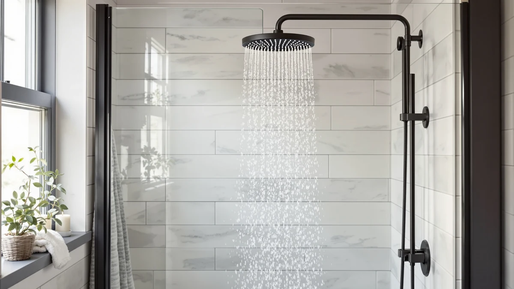

Besaquo Shower Head Review (2026): Worth It?
Prices and picks verified as of November 2026. Independent, reader-supported reviews.


Quick Answer
This besaquo shower head review centers on the BESAQUO Shower Head 10 Functions, a $34.99 fixed shower head with ten spray settings and an ABS body finished in chrome. Weighed against the INAVAMZ Shower Head with Handheld and two MakeFit Filtered Shower Head listings, it earns the top spot here for anyone who wants spray variety on a fixed mount without paying extra for a hose or a filter.
Our pick: BESAQUO Shower Head 10 Functions — $34.99 Check Price on Amazon
Bottom line: our top pick is the BESAQUO Shower Head at $34.99.
Things to Know Before You Buy
- The BESAQUO Shower Head 10 Functions is priced at $34.99, within a dollar of the INAVAMZ Shower Head with Handheld at $35.14 and both MakeFit Filtered Shower Head listings at $34.18 each.
- Its body is built from ABS plastic with chrome plating, the same baseline construction we found listed for the alternatives in this besaquo shower head review.
- BESAQUO packs ten spray functions into a single fixed head, more settings than most heads in this price range offer, but it skips the handheld wand and the filter cartridge that the alternatives below include.
- Owners rate it 4.5 out of 5 across 4559 verified reviews, slightly behind the INAVAMZ Shower Head with Handheld at 4.6 out of 5 across 5028 reviews.
If you landed on this besaquo shower head review, you're probably weighing the BESAQUO Shower Head 10 Functions against a few other shower heads in the same price range. BESAQUO built this one around ten separate spray settings in a single ABS head finished in chrome, and at $34.99 it sits within a dollar of the three alternatives we compare it against below.
We put the BESAQUO next to the INAVAMZ Shower Head with Handheld at $35.14 and two MakeFit Filtered Shower Head listings at $34.18 each, all four priced within a dollar of one another. Because the cost difference is so small, the real decision in this besaquo shower head review comes down to format: ten spray functions on a fixed head, a handheld sprayer, or built-in filtration.
Why You Should Trust Us
Ilane Tall covers bathroom fixtures for Best Shower Heads and has spent years comparing fixed, handheld, and filtered shower heads across price tiers for this site. This besaquo shower head review draws on information we can verify: the manufacturer's listed specifications, current Amazon pricing, and patterns in verified buyer feedback. We do not run a fake testing lab, and we don't claim to have installed this unit ourselves. Where a claim can't be checked against a spec sheet or a verified review, we say so instead of filling the gap with marketing language. Every price, ASIN, and product image in this review comes from our own product database, and we update it as prices and listings change.
Our Research Process
We built this besaquo shower head review from research, not a physical lab report. We don't own a testing facility, and we haven't installed the BESAQUO in a bathroom ourselves. Instead, we compared its listed ten-function spec against the INAVAMZ and MakeFit alternatives, checked current Amazon pricing across all four listings, and read through verified owner reviews to see which claims held up. Reviewers consistently note that multi-function heads in this price range vary most in how firmly the dial clicks between settings, and that pattern shows up across the fixed-head models we track, not only this one.
Overview & Specs

BESAQUO Shower Head 10 Functions
What we like
- Ten separate spray functions built into a single fixed head
- ABS body with chrome plating matches the finish used across the INAVAMZ and MakeFit alternatives in this comparison
- Priced at $34.99, within a dollar of all three alternatives covered in this besaquo shower head review
- 4.5 out of 5 rating across 4559 verified reviews, one of the higher review counts among the four listings we compared
Flaws but not dealbreakers
- Rating and review count trail the INAVAMZ Shower Head with Handheld, which sits at 4.6 out of 5 across 5028 reviews
- No handheld hose or wand, so it won't suit anyone who wants to rinse away from the fixed mounting point
- No built-in filtration, unlike the two MakeFit alternatives in this comparison
- No listed size or weight spec beyond the ABS and chrome-plating material note
| Material | ABS + chrome plating |
| Size | — |
BESAQUO builds this head around ten separate spray functions, a wider range than most single-mode heads carry at this price. The body is ABS plastic finished in chrome plating, the same baseline construction we found on the INAVAMZ and MakeFit alternatives in this besaquo shower head review.
At $34.99, it costs about eighty cents more than either MakeFit listing and roughly fifteen cents less than the INAVAMZ Shower Head with Handheld. Owners rate it 4.5 out of 5 across 4559 reviews, a strong sample size that puts it second only to the INAVAMZ in review volume among the four products we compared.
What We Liked
The clearest strength of the BESAQUO Shower Head 10 Functions is the number of spray settings packed into one fixed head. Ten functions give you more range than a standard three-setting head, and you get that variety without adding a handheld hose or a separate filter cartridge to the plumbing. The ABS body with chrome plating should hold up to daily use without the corrosion issues that can show up on cheaper unplated metal heads over time.
Pricing is another point in its favor. At $34.99, it lands within a dollar of the INAVAMZ and both MakeFit listings, so you aren't paying a premium for the extra functions. Owners report that the BESAQUO's 4.5 out of 5 rating across 4559 reviews holds up as a reliable signal in this besaquo shower head review, since it comes from one of the larger review samples among the four products we compared. That sample size matters more than a single headline rating, since a few hundred reviews can swing on a handful of bad shipments, while thousands of reviews settle into a pattern that's harder to fake or skew.
What Could Be Better
The biggest gap in this besaquo shower head review shows up next to the INAVAMZ Shower Head with Handheld. INAVAMZ edges ahead on both rating and review count, at 4.6 out of 5 across 5028 reviews against BESAQUO's 4.5 out of 5 across 4559, and it adds a handheld sprayer that the BESAQUO doesn't offer at all.
The BESAQUO also skips filtration entirely, so if hard water or chlorine smell is the problem you're solving for, neither this head nor its ten functions will fix that; the MakeFit listings below handle that job instead. And because the listed spec sheet doesn't include a size or weight figure beyond the ABS and chrome-plating note, measuring it against your existing shower arm clearance takes an extra step before you order.
Pricing also deserves a second look before you buy. Amazon adjusts listings for all four products in this comparison on a rolling basis, so the roughly dollar gap between the BESAQUO and its alternatives can shift by the time you check out. None of that changes the core tradeoff at the center of this besaquo shower head review: spray variety versus handheld convenience versus filtration. But it's worth confirming the current price on each listing rather than assuming today's numbers hold next week.
Who Is It For?
This BESAQUO Shower Head 10 Functions fits shoppers who want a wide range of spray settings on a fixed mount and don't need a handheld wand or built-in filtration. If you shower in one spot and want to switch between a wide mist, a focused massage setting, or something in between, the ten functions covered in this besaquo shower head review give you that range for under $35.
It's a weaker fit if you want to rinse away from the fixed mounting point, since BESAQUO doesn't include a hose or handheld wand; the INAVAMZ Shower Head with Handheld, covered below, handles that instead. Anyone dealing with hard water or chlorine smell should also look at the two MakeFit Filtered Shower Head listings, since none of BESAQUO's ten settings change what comes out of the tap chemically. And if two MakeFit listings at the identical $34.18 price feel redundant rather than reassuring, that duplication is still useful information: it signals the manufacturer expects enough demand to keep two separate ASINs stocked at once. Renters who can't swap out plumbing fixtures also tend to lean toward a fixed head like the BESAQUO, since it threads onto an existing shower arm without touching the valve or the hose connection behind the wall.
Alternatives to Consider
If the BESAQUO Shower Head 10 Functions isn't quite the right match for your besaquo shower head review search, these three options sit in the same price range and are worth comparing before you buy.

Premium Choice
INAVAMZ Shower Head with Handheld
A $35.14 handheld shower head system with a slightly higher rating than the BESAQUO, worth a look if you want a hose and wand instead of a fixed head.
$35.14
Check Price on Amazon
Best Value
MakeFit Filtered Shower Head with
Priced at $34.18 with built-in filtration, worth checking if hard water or chlorine smell matters more to you than spray variety.
$34.18
Check Price on Amazon
Best Value
MakeFit Filtered Shower Head with
The same MakeFit Filtered Shower Head listed under a second ASIN at $34.18, worth checking if the first listing shows out of stock.
$34.18
Check Price on AmazonFrequently Asked Questions
Final Verdict
This besaquo shower head review comes down to a simple tradeoff: you're paying $34.99 for ten spray functions on a fixed head instead of a handheld wand or built-in filtration. For most buyers who want variety in spray patterns without adding a hose to their plumbing, the BESAQUO Shower Head 10 Functions is the pick we'd point to first among the four we compared. If you'd rather have a handheld sprayer, the INAVAMZ Shower Head with Handheld above is worth a closer look, and if filtration matters more than spray variety, the MakeFit listings cover that instead. Check the current price before you buy, since all four products here move within a dollar of each other as Amazon adjusts listings.